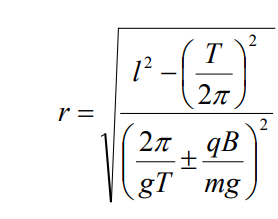

Sharning oniy holati bilan xOy koordinata sistemasi markazini mos tushadigan qilib tanlaymiz. Ox shar aylanayotgan aylana markazidan o'tadi, Oy esa vertikal. Magnit maydon induksiyasi B (yuqoriga yo'nalgan).
Sharning harakat tenglamalari (Sharning aylana bo'ylab soat strelkasiga qarshi harakatida) quidagicha:
Bundan tashqari,
tenglamalar o'rinli bu tenglamalar yordamida esa r ni hisoblaymiz.

Shar soat strelkasi bo'yicha harakatlanayotgan bo'lsa + belgisi, qarshi harakatlanayotgan bo'lsa minus (aylanaga yuqoridan qaraganda).
Javob: